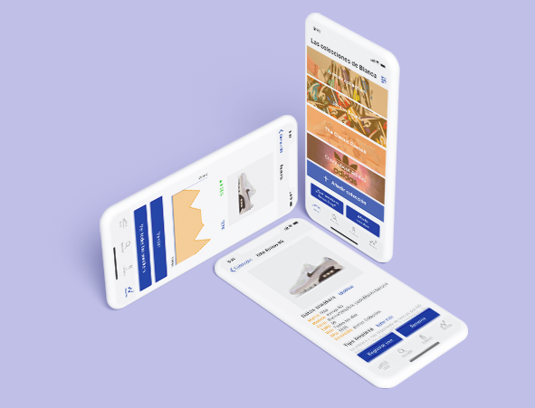
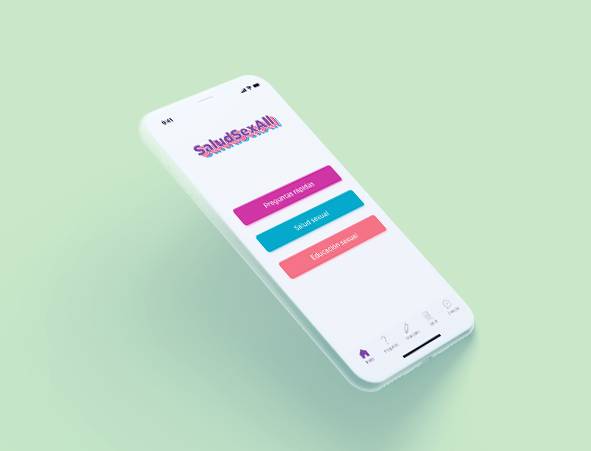
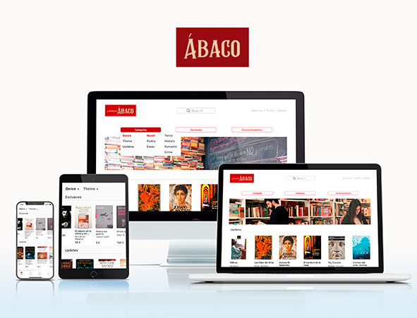
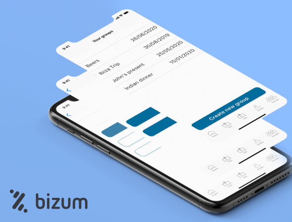

Blanca Rodríguez-Loras
UX/UI Designer
Art Director
SNKR-KEEPR
In this project I wanted to help sneakerheads with the problems they have when it comes to knowing all the shoes they have. Spoiler: there are usually more than 100 pairs.

SALUDSEXALL
This project aims to help with questions about sexual health that may arise with a database taken from professionals and with access to chat consults with professionals.

REDISEÑO LIBRERÍAS ÁBACO
This project planned the redesign of a library website and the creation of an app for it. This website was chosen due to the complexity of the organization of the books it had.

ADD FEATURE: BIZUM
This project focuses on adding a feature to a spanish banking app that is about instant transactions between friends.
